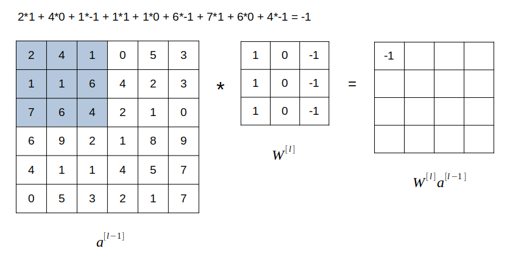
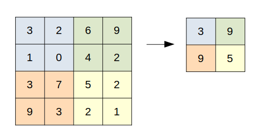
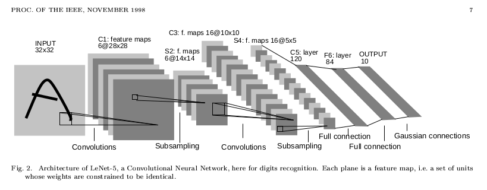

โดย ชิตพงษ์ กิตตินราดร | มกราคม 2563
Neural network ทั่วไปอาจทำงานได้ดีกับข้อมูลที่ไม่ซับซ้อนและถูกเตรียมมาให้มีมาตรฐานเดียวกัน เช่นภาพขาวดำขนาดเล็กที่วัตถุอยู่กลางภาพ แต่พอข้อมูลมีความซับซ้อน ขนาด และความหลากหลายมากขึ้น จะทำงานได้ไม่ดีนัก โดยมักจะเกิดปัญหา Variance ซึ่งก็คือการที่โมเดลไม่สามารถทำนายข้อมูลที่ไม่เคยเห็นได้ดีเท่าที่ควร
ในบทนี้เราจะมาทำความรู้จัก Convolutional Neural Network หรือ CNN ซึ่งเป็นโครงสร้าง Neural network แบบพิเศษ ที่มีความสามารถในการจำแนกข้อมูลประเภทรูปภาพได้ดีกว่า Neural network ทั่วไปมาก
ไอเดียหลักของ CNN คือการที่ใช้ Layer ชนิดพิเศษ ที่เรียกว่า Convolution layer ซึ่งทำหน้าที่สกัดเอาส่วนต่างๆ ของภาพออกมา เช่น เส้นขอบของวัตถุต่างๆ เพื่อให้โมเดลสามารถเรียนรู้ลักษณะของภาพได้อย่างมีประสิทธิภาพและแม่นยำ
ใน CNN จะใช้ Convolution layer มาประกอบกับ Layer ชนิดอื่น เช่น Pooling layer แล้วนำกลุ่ม Layer ดังกล่าวมาซ้อนต่อๆ กัน โดยอาจเปลี่ยน Hyperparameter บางอย่าง เช่นขนาดของ Filter layer (ซึ่งเป็นส่วนหนึ่งของ Convolution layer) และจำนวน Channel ของ layer วิธีการนำเอาส่วนต่างๆ มาประกอบกันนี้ เรียกว่าเป็นโครงสร้าง (Architecture) ของ CNN ซึ่งมีหลายแบบ เช่น LeNet, AlexNet, VGG, ResNet, Inception Network เป็นต้น ซึ่งเราจะพูดถึงโครงสร้างแบบต่างๆ นี้ในบทถัดไป แต่ตอนนี้เรามีทำความเข้าใจส่วนประกอบต่างๆ ของ CNN ซึ่งเป็นพื้นฐานที่จะนำมาประกอบกันเสียก่อน โดยเริ่มที่ Convolution layer
เพื่อความเข้าใจ ให้ลองทำความเข้าใจก่อนว่า Convolution คืออะไร

จากภาพ สมมุติเรามี Matrix ซ้ายมือ ขนาด 6x6 และมี Matrix ตรงกลาง ซึ่งเรียกว่า Filter หรือ Kernel ขนาด 3x3 เราจะนำเฉพาะ 3x3 ช่องแรกของ Matrix แรก มาคูณแบบ Element-wise กับ Filter matrix แล้วนำผลที่ได้แต่ละค่า (ซึ่งมีทั้งสิ้น 9 ค่า) มาบวกกัน แล้วนำไปสู่ในแถวแรกคอลัมน์แรกของ Matrix ที่สามซึ่งเป็นผลลัพธ์ โดยในภาพ ผลลัพธ์ที่ว่า เท่ากับ -1
ถัดมา เราจะเลื่อนกรอบขนาด 3x3 ใน Matrix แรกไปทางขวา 1 ช่อง แล้วทำแบบเดิม ผลลัพธ์ที่ได้ นำไปใส่ในแถว 1 ช่อง 2 ของ Matrix ผลลัพธ์ ทำไปเรื่อยๆ จนสุดทาง แล้วเลื่อนกรอบ 3x3 ลงมาด้านล่าง 1 ช่อง (ชิดขอบด้านซ้ายมือ) แล้วทำแบบเดิม จนกระทั่งเติมค่าใน Matrix ผลลัพธ์จนเต็ม
กระบวนการนี้ เรียกว่า Convolution ซึ่งแสดงสัญลักษณ์ด้วย ส่วน Neural network ที่มี Layer ที่ใช้กระบวนการ Convolution นี้อย่างน้อย 1 Layer เราก็เรียกว่า Convolutional neural network
ถ้าหากข้อมูล Input เป็นภาพสี RGB แปลว่าจะมีค่าสีที่เป็น Matrix ขนาด 6x6 จำนวน 3 ชั้น ดังนั้น Filter ของเราก็จะมี 3 ชั้นตามไปด้วย ส่วนการคำนวน Convolve ก็ให้ทำทีละชั้น นั่นคือ Input ชั้นที่ 1 คูณ Element-wise กับ Filter ชั้นที่ 1 ส่วน Input ชั้นที่ 2 คูณ Element-wise กับ Filter ชั้นที่ 2 เป็นต้น เสร็จแล้วนำผลที่ได้ของทั้ง 3 ชั้นมาบวกกันทั้งหมด กลายเป็นตัวเลข Scalar ตัวเดียว แล้วนำไปใส่ในช่องแรกของ Matrix ผลลัพธ์
ในกระบวนการนี้ Matrix แรกด้านซ้ายมือที่เป็น Input ก็คือ ส่วน Filter matrix คือ Matrix ของค่าน้ำหนัก ซึ่งมีค่าที่ต้องเรียนรู้จากกระบวนการ Backward propagation ผลที่ได้จากการ Convolve 2 Matrix นี้เข้าด้วยกัน คือ Matrix ผลลัพธ์ นั่นคือ นั่นเอง จากนั้นเราก็บวก Intercept เข้าไป ประกอบกันกลายเป็นผลลัพธ์สมการเส้นตรง แล้วก็นำ นี้ไปป้อนเข้า Activation function ก็จะได้ผลเป็น Activation output ของ Layer นั้น นั่นก็คือ
สังเกตว่า Convolution layer นี้ มีคุณสมบัติพิเศษอยู่ 2 ประการ คือ:
1) ทั้ง Layer ใช้ค่าน้ำหนัก ร่วมกัน: กระบวนการ Convolution ใช้ Filter ค่าน้ำหนักตัวเดียวกัน มาคำนวนหา โดยการ Convolve กับ Input ในตำแหน่ง Grid ต่างๆ หลายๆ ครั้งจนครบ ดังนั้น จำนวนของค่าน้ำหนัก ใน Matrix ค่าน้ำหนัก จะมีจำนวนน้อยกว่า Neural network แบบทั่วไปมาก ซึ่งนอกจากจะส่งผลให้การคำนวนทำได้เร็วขึ้นมากแล้ว การใช้ค่าน้ำหนักชุดเดิมซ้ำๆ ในหลายๆ ส่วนของภาพจะเป็นการตรวจจับคุณลักษณะบางประการในหลายๆ ส่วนของภาพ
ตัวอย่างเช่น หาก Filter matrix มีแถวซ้ายเป็นค่าบวก แถวขวาเป็นค่าลบ ดังนี้:
ถ้าเรานำ Filter นี้ไป Convolve กับ Input matrix ที่ด้านซ้ายกับขวาสว่างไม่เท่ากัน เช่น:
จะส่งผลให้ Linear function ผลลัพธ์ มีค่ามากตรงแถวกลางๆ ดังนี้:
ค่ามากหมายถึงมีความสว่างมาก นั่นแปลว่า Filter นี้ใช้ Detect ส่วนของภาพที่เป็นเส้นขอบแนวดิ่งนั่นเอง
2) การเชื่อมต่อข้าม Layer แบบ Sparse: ค่าของ Output ในแต่ละ Layer เป็นผลมาจากการคำนวนค่า Input เพียงบางส่วน ซึ่งต่างกับ Neural network ทั่วไปที่มีการเชื่อมต่อแบบ Dense หมายถึงค่าของ Output แต่ละ Neuron มาจากการคำนวน Input ทุก Neuron การเชื่อมต่อแบบ Sparse ส่งผลให้การคำนวนนั้นเร็วขึ้นมาก
กระบวนการ Convolution มักจะทำให้ Matrix ผลลัพธ์มีมิติเล็กลง ซึ่งถ้าหากเราทำ Convolution หลายๆ ชั้น ภาพสุดท้ายที่ออกมาก็จะเล็กลงมาก นอกจากนั้น Convolution ยังมีแนวโน้มที่จะทำให้ข้อมูลที่อยู่ตามขอบของภาพนั้นไม่ถูกนำไปคำนวนอย่างเต็มที่เหมือนข้อมูลที่อยู่ส่วนกลางของภาพ เพราะ Filter มีโอกาสจับข้อมูลตามขอบภาพน้อยกว่าตรงกลางภาพ
ทางออกต่อปัญหา 2 ข้อนี้ คือการทำ Padding ซึ่งก็คือการขยายขอบของข้อมูล Input ออกทุกด้านเท่าๆ กัน เช่น ถ้า Input มีขนาด 6x6 การทำ Padding จะทำให้ Input มีขนาดเป็น 8x8
เราสามารถคำนวนได้ว่าเมื่อทำ Padding แล้ว มิติของ Output จะเป็นเท่าใด แต่ก่อนอื่น ลองเปรียบเทียบกับแบบธรรมดา
1) "Valid" convolution คือไม่มี Padding
มิติของ Output คือ:
โดย คือมิติของ Input ส่วน คือมิติของ Filter
2) "Same" convolution คือการ Pad เพื่อให้มิติของ Output เท่ากับมิติของ Input
มิติของ Output คือ:
โดย คือขนาด Pixel ของ Padding ในแต่ละด้าน.
ตัวอย่างเช่น ถ้า Filter มีขนาด 5x5 เราจะต้อง Pad เป็นจำนวนดังนี้:
อนึ่ง ควรจะเป็นเลขคี่ เพื่อให้เกิดความสมมาตรและมีจุดกึ่งกลาง
Stride แปลว่า "ย่างก้าว" หมายถึงจำนวนช่องที่จะเลื่อนไปในกระบวนการ Convolution แต่ละครั้ง เช่นถ้าเลื่อนทีละช่อง Stride แต่ถ้าเลื่อนทีละ 2 ช่อง ก็คือ
สูตรในการคำนวนขนาด Output เมื่อใช้ Stride คือ:
สังเกตว่าเราจะปัดเศษลง ไม่ใช่ปัดขึ้น
หลังจากที่ข้อมูลผ่าน Convolution layer แล้ว บ่อยครั้งที่จะถูกส่งเข้า Layer อีกแบบหนึ่งที่เรียกว่า Pooling layer
หน้าที่ของ Pooling layer คือการสกัดเอาส่วนที่สำคัญที่สุดของข้อมูล และเพิ่มประสิทธิภาพการประมวลผลให้รวดเร็วยิ่งขึ้น กลไกของ Pooling layer นั้นเรียบง่ายมาก คือการสกัดเอาเฉพาะค่าสูงสุดของ Grid เก็บไว้ใน Output เช่นจากภาพ แสดง Pooling layer ขนาด 2x2 โดยมีค่า Stride :

Pooling layer ที่สกัดเอาเฉพาะค่าสูงสุดของ Grid เก็บไว้ เรียกว่า Max pooling ซึ่งเป็นรูปแบบที่ใช้บ่อยที่สุด นอกจากนั้นยังมี Average pooling ซึ่งหาค่าเฉลี่ยของ Grid เก็บไว้ แต่ใช้น้อยกว่า Max pooling มาก
ตอนนี้เรารู้จักองค์ประกอบของ Convolutional neural network แล้ว เราจะจบบทนี้ด้วยการแสดงตัวอย่างว่าองค์ประกอบเหล่านี้ จะถูกนำมาต่อกันเป็น CNN อย่างไร
สมมุติว่าเรามีภาพตั้งต้นขนาด 32x32 pixel โดยเป็นภาพสี RGB นั่นหมายความว่าภาพนี้มี 3 Layer คือแทนสี Red, Green, และ Blue โดยเราต้องการจำแนกภาพนี้ออกเป็น 10 ประเภท:
Input layer a[0]: (32, 32, 3)
ใน Layer แรก เราจะใช้ Convolution layer ขนาด 5x5 โดยมี Stride เท่ากับ 1 และไม่มี Padding โดยจะใช้ Convolution layer บบนี้ทั้งสิ้น 6 Layer นั่นก็คือ เราจะได้มิติของ จากการคำนวนตามสมการที่ (4) ดังนี้
Convolution layer a[1]: (28, 28, 6)
จากนั้นเราจะใช้ Max pooling ขนาด ก็จะได้มิติของ Activation function ของ Layer ที่ 1 จากการคำนวนตามสมการที่ (8) ดังนี้:
Max-pooling layer a[1]: (14, 14, 6)
ต่อมาใน Layer ที่สอง เราจะใช้ Convolution layer ขนาด 5x5 โดยมี Stride เท่ากับ 1 และไม่มี Padding โดยจะใช้ Convolution layer บบนี้ทั้งสิ้น 16 Layer นั่นก็คือ จะได้มิติดังนี้:
Convolution layer a[2]: (10, 10, 16)
จากนั้นเราจะใช้ Max pooling ขนาด ก็จะได้มิติของ Output ของ Layer ที่ 2 ดังนี้:
Max-pooling layer a[2]: (5, 5, 16)
เสร็จแล้วเราจะปิดท้าย Layer ที่สอง ด้วยการรวมเอา Output ทั้งหมดมา Activate ใน Dense layer นั่นก็คือ Layer ที่เชื่อมต่อทุก Neuron แบบปกติ ซึ่งจะมีขนาดเท่ากับ Output นั่นก็คือ 5x5x16 = 400 เราเรียก Layer ชนิดนี้ว่า Dense หรือ Flatten layer:
Flatten (dense) layer a[2]: (400)
จากนั้นเราจะนำ Dense layer ไปเชื่อมเข้ากับ Dense layer อีกชั้น แต่คราวนี้ลดขนาดลงเป็น 120:
Flatten (dense) layer a[3]: (120)
แล้วก็นำ Dense layer ไปเชื่อมเข้ากับ Dense layer อีกชั้นหนึ่งซึ่งเล็กลงไปอีก คราวนี้มีขนาด 86:
Flatten (dense) layer a[4]: (86)
สุดท้ายก็ Output ออกไปยัง Softmax layer ขนาด 10 neuron เพื่อจำแนก Classification ออกเป็น 10 กลุ่ม:
Softmax layer a[5]: (10)
คงพอจะเห็นภาพว่าเราสามารถนำส่วนประกอบต่างๆ มาประกอบกันเป็น Convolutional neural network ได้ตามตัวอย่าง ซึ่งอันที่จริงเป็นโครงสร้างที่เรียกว่า LeNet-5 ซึ่งถูกตีพิมพ์แผนแพร่เมื่อปี 1998 และถูกนำมาใช้ในการอ่านตัวเลขบนเช็คโดยธนาคารหลายแห่ง ถือเป็นหนึ่งในโครงสร้าง CNN แบบคลาสสิค

ภาพโครงสร้าง LeNet-5 จาก Paper ต้นฉบับ "Gradient-based learning applied to document recognition" ตีพิมพ์ใน Proceedings of the IEEE, November 1998
ในบทต่อไปเราจะทำความรู้จักกับโครงสร้าง CNN ที่เป็นที่นิยม
หน้าแรก | บทที่ 18 Neural Network Regularisation | บทที่ 20 CNN Architectures